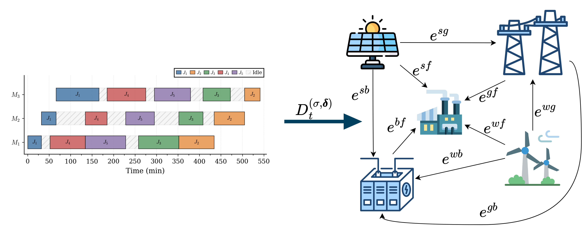
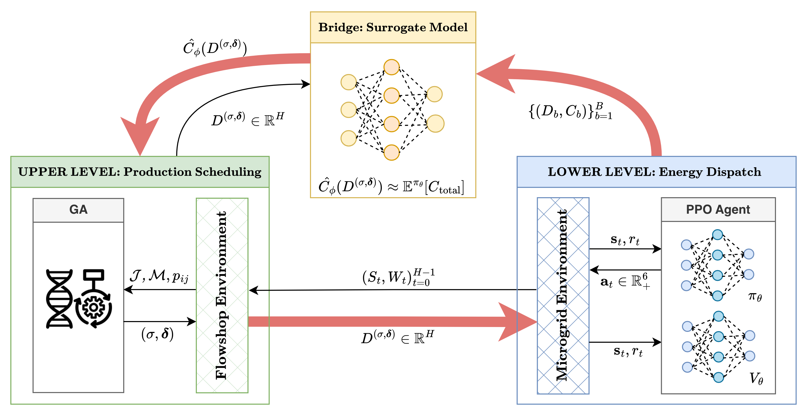
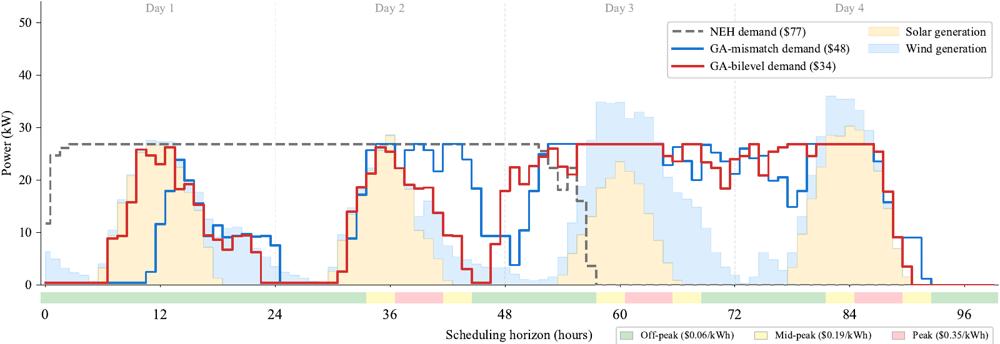

Bilevel Optimization for Joint Flowshop Scheduling and Microgrid Energy Management
When work can be scheduled flexibly, its energy demand becomes a decision—not just an input. I jointly optimized factory jobs and microgrid dispatch, a structure relevant to coordinating EV trips with charging and renewable availability.


Two decision layers, one cost objective
- GA schedules jobs: choose job order and start-time offsets, shaping when electricity is needed.
- PPO dispatches energy: allocate solar, wind, battery, and grid supply as conditions evolve.
- A neural surrogate accelerates search: estimate dispatch cost instead of running a full dispatch simulation for every candidate schedule.
PPO learns sequential decisions in simulation; MPC was also evaluated over seven horizons. The choice depends on forecasting, model quality, and computation—not a universal advantage of one algorithm.
Why scheduling and dispatch must be optimized together

Scheduling changes demand; dispatch chooses how to supply it. Matching demand to renewable generation alone is not enough: storage, electricity prices, and the dispatcher’s response also affect cost. The bilevel search evaluates schedules through that downstream energy decision.
Renewables + time-of-use pricing. Shift flexible production toward renewable availability and cheaper hours; charge at lower prices and use stored energy during higher-price periods, subject to SOC, efficiency, and operating limits. This supports load shifting and price arbitrage. The figure’s example tariff is $0.06/$0.19/$0.35 per kWh for off-peak/mid-peak/peak periods.
Make lower cost operationally meaningful
I modeled SOC limits and efficiency losses, and designed a factory-first action space that rules out selling renewables and then buying grid electricity to meet factory demand. This encodes a specific operating rule directly in the choices available to the policy.
I checked surrogate rankings and bias, and corrected how remaining battery energy was valued at the end of an episode. These checks help avoid selecting the wrong schedule or reporting savings caused by inconsistent final battery inventories.
Help the policy learn the value of charging now
Charging incurs an immediate cost but may reduce purchases at a later peak price. I used potential-based reward shaping to make that delayed value more informative during training, alongside a penalty for renewable waste.
Ct: grid purchase cost − renewable export revenue + battery cycling cost. ρt: current buy price; ρmax = maxτ≥t ρτ from the known ToU schedule. Bcap: battery capacity; β, η: calibration coefficients.
Renewable-waste penalty
Rt is solar + wind generation; Dt(σ,δ) is schedule-dependent demand; Broom,t is available battery headroom. The penalty encourages preserving room for renewable energy.
From job scheduling to EV route and charging planning
For an EV fleet, trip assignments and departure times shape charging demand, while renewable generation, ToU prices, and shared charger capacity shape the charging plan. This is the same coupling between an operational schedule and energy decisions that I studied in the factory system.
To transfer the approach, I would add vehicle connection windows, required energy at departure, and charger limits, then evaluate energy cost together with vehicle readiness and constraint violations. My implemented results are from factory microgrid simulations; the EV formulation is a proposed extension.
Evidence and scope
Using real solar, wind, and price inputs from three locations, electricity cost was 13–25% lower than a rule-based controller across five production scenarios. These are simulation results; the headline is not a comparison against MPC or evidence of EV fleet deployment.